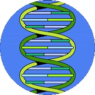

International eDNA Standardization Task Force
The International eDNA Standardization Task Force (iESTF) leverages resources and knowledge from members of the eDNA community for coordinated and timely adoption of international eDNA standards.
- We engage with the eDNA research community to help set minimum quality requirements for standardized procedures while allowing room for growth and optimization in this rapidly advancing field
- We engage with stakeholders including policy makers, managers, and various industry iuser groups
- We work with various ISO working groups for effective developmenet of standards for a variety of applications
- We provide a point of contact for information, resources, and educational material